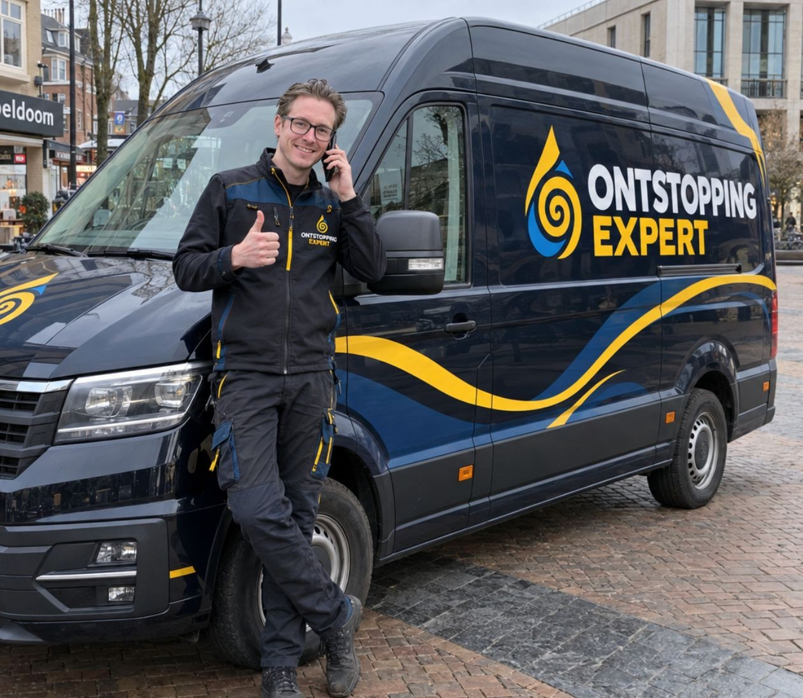
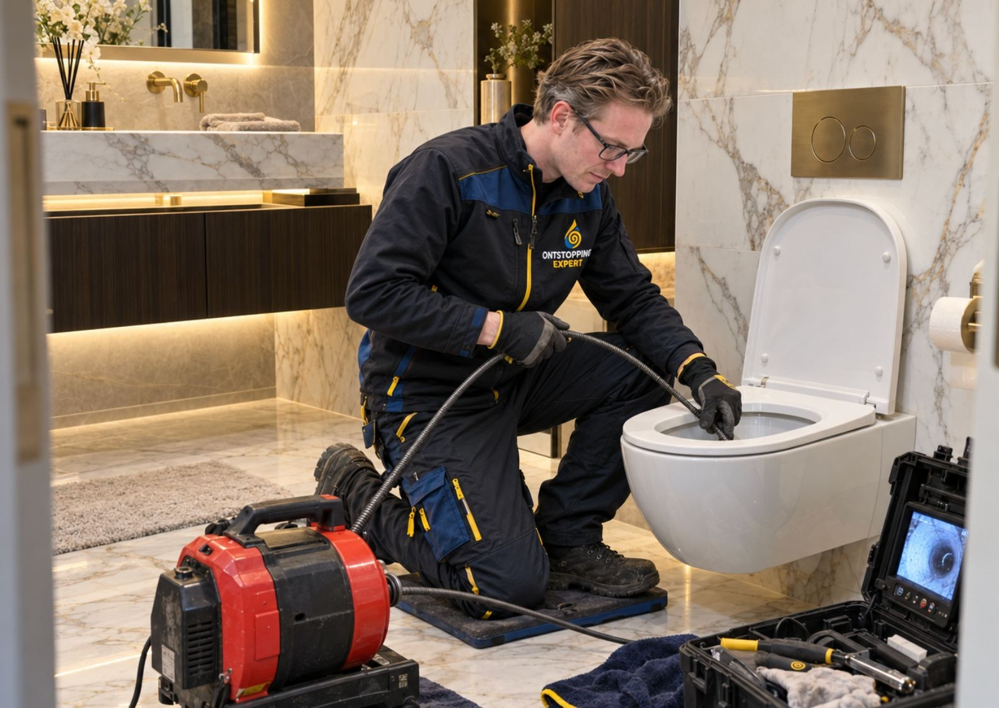
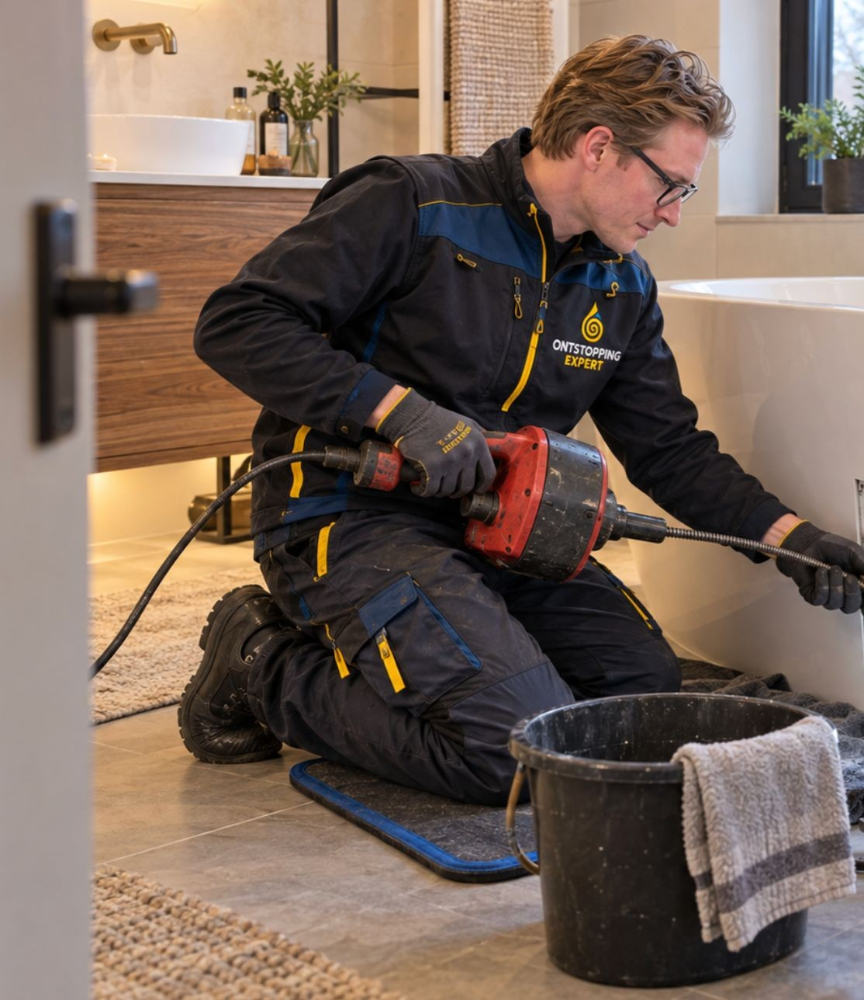

Loodgieter en ontstoppingsbedrijf in Apeldoorn
Verstopt of lek? Bel, en er komt een monteur.
Wij ontstoppen afvoeren, wc's en riolen, verhelpen lekkages en repareren sanitair. Dag en nacht, ook in het weekend. U hoort de prijs voordat we beginnen.
24 uur per dag, 7 dagen per week 085 333 4339
Wat is er aan de hand?
Van een trage afvoer tot water in de kruipruimte. Dit lossen wij op in Apeldoorn en omgeving.
- Afvoer ontstoppen
- Loopt het water traag weg of staat het stil? We maken de afvoer grondig vrij en reinigen de leiding meteen mee.
- Wc en riool ontstoppen
- Een verstopte wc of overlopend riool is spoed. We komen direct, ontstoppen en controleren of de leiding weer vrij is.
- Lekkage opsporen en verhelpen
- Lekkende afvoer, kraan of leiding: we vinden de oorzaak en herstellen het lek, ook in de kruipruimte of achter de wand.
- Loodgieterswerk en sanitair
- Van een lekkende kraan tot een nieuwe badkamerafvoer. Kleine en grote klussen.
- Rioolinspectie met camera
- Bij aankoop van een woning of bij stankoverlast. U ziet precies in welke staat uw afvoerleidingen zijn.
- Spoed, dag en nacht
- Acute verstopping, lekkage of overstroming, ook 's nachts of in het weekend: er staat binnen korte tijd een monteur bij u.
Ook voor VvE's en bedrijven.

Zo gaat het
-
1
U belt
Op 085 333 4339, 24 uur per dag, ook in het weekend.
-
2
We komen eraan
Bij spoed zijn we in Apeldoorn meestal binnen 30 tot 60 minuten ter plaatse.
-
3
U hoort de prijs
Na een korte diagnose krijgt u een vaste prijs, voordat het werk begint.
-
4
Opgelost
Verstopping vrij, lek dicht, alles schoon achtergelaten. Met garantie op het werk.
Tarieven
Een afvoer in keuken of badkamer ontstoppen kost vanaf €129. De rest is maatwerk: de prijs hangt af van de oorzaak en hoe groot het probleem is.
Geen akkoord op de prijs, geen werkzaamheden.
U hoort vooraf wat het kost, inclusief een eventuele toeslag voor spoed in de avond, nacht of het weekend.
| Dienst | Prijs |
|---|---|
| Afvoer ontstoppen | vanaf €129 |
| Spoedhulp's avonds, 's nachts en in het weekend (buiten ma t/m vr 08:00 tot 17:00) | Spoedtarief |
| Wc en riool ontstoppen | Op aanvraag |
| Lekdetectie | Op aanvraag |
| Rioolinspectie | Op aanvraag |
| Sanitair en leidingwerk | Op aanvraag |
Voorrijkosten niet inbegrepen.
Prijs vragen: 085 333 4339
Uit Apeldoorn, voor Apeldoorn
Snel, eerlijk en vakkundig. Vanaf de Stadskade rijden onze monteurs door de hele stad en naar de dorpen eromheen.
We kennen de buurt. In wijken als Berg en Bos, Kerschoten en De Maten staan veel huizen uit de jaren zestig en zeventig, met oude bomen waarvan de wortels in tuinriolen groeien. In Ugchelen, Loenen en Beekbergen liggen vaak nog lange particuliere rioolleidingen.
Wijken en dorpen waar we komen
- Centrum
- De Maten
- Zuid
- Zevenhuizen
- Osseveld-Woudhuis
- Berg en Bos
- Kerschoten
- Ugchelen
- Loenen
- Beekbergen
- Hoenderloo
- Orden
- Brinkhorst
- De Parken
Ook in de regio: Deventer, Epe, Vaassen, Twello, Brummen, Eerbeek, Klarenbeek en Voorst.
- Adres
- Stadskade 334c
7311 XX Apeldoorn - Openingstijden
- Maandag tot en met zondag, 24 uur
- 5 sterren uit 3 reviews